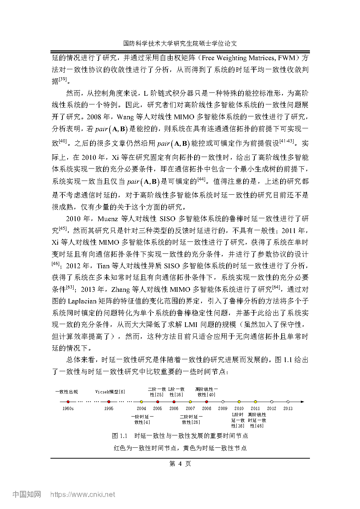
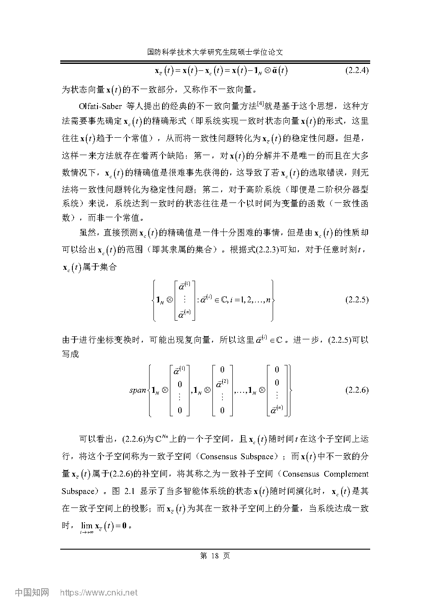

1. Paper Info
| Title | 高阶线性多智能体时延一致性理论及其在多无人机协同控制中的应用 |
| Authors | Authors from PDF |
| Venue | |
| Source |
2. 核心洞察与创新分析 (Insight & Novelty)
Q: 高阶线性MAS时延一致性问题的根本瓶颈在哪里？
A: 高阶动力学引入的个体状态维度 $n$ 与多智能体网络规模 $N$ 通过通信拓扑的拉普拉斯矩阵产生全耦合，使得整个闭路系统的状态空间维度高达 $nN$。传统方法在该联合高维空间中直接构造Lyapunov泛函，不仅导致LMI维数迅速膨胀至难以求解，而且由于未区分"一致方向"（consensus subspace）与"分歧方向"（disagreement subspace），在时延稳定性分析中引入了大量不必要的保守性。本论文的根本洞察是：如果能够在张量积结构下明确分离这两个子空间，就可以把$nN$维的时延稳定性问题转化为$N-1$个$n$维子系统的并行判定问题——这是计算复杂性和保守性的双重突破。
灵感→洞察映射表
| 灵感来源 | 核心洞察 | 对UAV群体的启示 |
|---|---|---|
| 图论中的拉普拉斯矩阵零特征值对应于一致流形 (Olfati-Saber & Murray, 2004) | 拉普拉斯矩阵的谱分解仅在"网络维度"上做降阶，并未触及"个体维度"——在高阶系统中，即使将网络对角化，每个对角块仍耦合了多个个体状态分量，需要新的数学工具在张量积意义下同时分解网络结构与个体动力学 | 无人机编队的状态（位置、速度、姿态）天然就是高阶向量，单纯对通信图做谱分解不足以解耦队形保持与队形机动两种模态 |
| 线性代数中基与张量积的基本理论 | 传统意义下的"基"仅作用于单一向量空间；若将一组(列)向量与拉普拉斯矩阵的特征向量做Kronecker积，则可在 $nN$ 维张量积空间中诱导出一组同时"感知"个体状态维度和网络拓扑维度的坐标系统——这就是克罗内克扩展基的本质 | 在无人机协同中，"一致子空间"对应于编队的整体刚体运动（所有无人机以相同规律运动），"分歧子空间"对应于相对位置/速度的调整——这个分解可指导设计仅作用于分歧子空间的控制器 |
| 线性时延系统的Lyapunov-Krasovskii稳定性理论 (Gu, Kharitonov & Chen, 2003) | Lyapunov-Krasovskii泛函对时延系统是"万能"的稳定性工具，但其保守性高度依赖于泛函结构的选择以及交叉项的处理方式。自由权矩阵技术的本质是在泛函导数中引入额外的自由矩阵变量来"松绑"牛顿-莱布尼茨公式带来的保守约束 | 无人机通信时延不可忽略（尤其在远距离通信或窄带宽条件下），直接从已有的无人机编队控制方案更难达到充分的时延鲁棒性——需要引入Lyapunov-Krasovskii框架做定量保障 |
| 自由权矩阵方法 (He, Wu, She & Liu, 2004) | 自由权矩阵通过在Lyapunov泛函导数的恒等变换中引入不改变等式性质的额外矩阵变量，将各时延通道的耦合关系显式分离，从而为每个时延通道独立地"分配"稳定性裕度，这是本文多时延判据能超越单时延判据的根本原因 | 多无人机系统中各通信链路的时延往往不同（受距离、遮挡、多径效应等因素影响），多时延模型比单一时延模型更贴近实际，而自由权矩阵为每条链路提供独立裕度 |
| 一阶积分器型MAS时延平均一致条件 (Blondel et al., 2010等) | 一阶积分器系统的一致状态轨迹是初始状态平均值的常数函数，而对高阶线性系统，一致状态轨迹由全部初始状态以及系统矩阵$A$共同决定的指数函数动态演化——这意味着判断"是否收敛到平均值"需要同时考虑动态演化和时延的影响，充要条件的推导远较一阶情形复杂 | 对无人机的二阶/高阶动力学模型，即使队形收敛了，编队的整体轨迹仍可能偏离各机初始状态的平均值——需要额外条件保证"平均一致"而非仅仅"一致" |
创新卡片
定义要点：设 $\{\phi_1,\ldots,\phi_{nN}\}$ 是 $\mathbb{R}^{nN}$ 的一组基。若存在 $\mathbb{R}^n$ 中的向量组 $\{v_1,\ldots,v_n\}$ 和 $\mathbb{R}^N$ 中的向量组 $\{w_1,\ldots,w_N\}$，使得 $\{\phi_k\}$ 可由 $\{v_i \otimes w_j\}$ 张成，则称此基为一组克罗内克扩展基（Kronecker Basis）。在此基下，全体智能体的状态向量 $x = [x_1^T,\ldots,x_N^T]^T \in \mathbb{R}^{nN}$ 可被分解为 $x = \sum_{i=1}^{n}\sum_{j=1}^{N} \alpha_{ij}(v_i \otimes w_j)$。
关键性质：当 $\{w_j\}$ 取为通信拓扑拉普拉斯矩阵 $L$ 的正交归一特征向量组时，$\{1_N/\sqrt{N}\}$（全1向量对应的特征向量）张成一致子空间——该方向上的状态分量不受控制输入与通信时延的影响；而其余 $N-1$ 个特征向量张成分歧子空间——必须通过控制器迫使该方向上的状态分量渐近收敛到零。这一分解在张量积的意义下实现了对"网络维度"和"个体状态维度"的同时解耦。
创新意义：在此之前的文献中，高阶MAS的一致性问题通常通过两次相似变换来降阶——先将拉普拉斯矩阵对角化，再对每个对角块进行Lyapunov分析——缺乏一个统一的、数学上严格的张量积框架。Kronecker Basis的提出填补了这一空白，为整个论文提供了可复用的数学基础设施。
背景：截至2013年，高阶线性MAS的一致性理论主要局限于无时延或单时延情形。对于每条通信链路具有独立时延 $\tau_{ij}$ 的多时延情形，系统的闭路动力学成为一个含多个离散时延的泛函微分方程，经典Lyapunov-Krasovskii方法的直接应用会导致：(i) LMI中矩阵变量维数随 $N$ 平方增长；(ii) 多个时延之间的交叉耦合无法被传统自由权矩阵有效松绑。
突破：本文一方面利用Kronecker Basis将 $nN$ 维系统降阶为 $N-1$ 个 $n$ 维子系统，大幅降低LMI规模；另一方面提出改进型自由权矩阵结构——将自由权矩阵设计为分块对角形式 $W = \operatorname{diag}(W_1, W_2, \ldots, W_{N-1})$，每个 $W_k$ 独立地对应一个分歧子空间模态——使得每个分歧模态可以"携带"其专属的自由权矩阵变量，从而为每条通信链路的时延提供解耦的保守性缓冲。
验证：仿真中令所有 $\tau_{ij}$ 退化至相同值时，本文多时延判据能判定的 $\tau_{\max}$ 仍大于（而非等于）本文单时延判据的结果，这证明改进型自由权矩阵结构本身（而非建模粒度的差异）带来了额外的保守性降低。
问题本质：一致性（consensus）只要求所有智能体状态渐近趋同，而平均一致性（average consensus）额外要求这个共同极限值等于各智能体初始状态的加权平均值。在无时延情形，平衡通信拓扑天然保证平均一致性；但在有时延情形下，时延会"扭曲"信息在网络中的传播，可能导致尽管状态趋同了但共同值偏离初始平均值。
理论贡献：基于Kronecker Basis导出的一致状态轨迹解析表达式 $x^c(t) = (1_N^T L_{\text{left}} \otimes I_n) x(0)$ （其中 $L_{\text{left}}$ 是拉普拉斯矩阵的左特征向量矩阵），分析了时延 $\tau_{ij}$ 对 $x^c(t)$ 动态的影响，最终给出了平衡拓扑下单/多时延平均一致性的充分必要条件。这一结果将一阶MAS的平均一致性理论完整地推广到任意高阶线性系统，且在退化情形下与已有结果精确吻合。
3. 系统架构 / 论证逻辑 (Architecture)
流程图一：数学理论架构
高阶线性MAS
含多个通信时延 τij"] --> B["数学基础
Kronecker Basis 构造
张量积空间分解"] B --> C["状态空间降维
nN维 → N-1个n维
等价子系统"] C --> D1["一致子空间 (1个)
不受控制与时延影响
由 1N/√N 张成"] C --> D2["分歧子空间 (N-1个)
必须通过控制器
驱动至渐近零"] D2 --> E["Lyapunov-Krasovskii 泛函
对每个分歧子系统独立构造"] E --> F1["单时延情形
传统自由权矩阵
+ LMI收敛判据"] E --> F2["多时延情形
改进型自由权矩阵
+ LMI收敛判据"] F1 --> G["时延上界判定
max τ 使得LMI可行"] F2 --> G D1 --> H["一致状态轨迹
解析形式推导"] H --> I["时延平均一致
充要条件
(平衡拓扑)"]
流程图二：应用工程架构
时延上界 & 平均一致条件"] --> T2["多无人机动力学建模
ẋi = Axi + Bui
(二阶/高阶线性模型)"] T2 --> T3["时延通信协议设计
τij 建模
(各链路的实际时延测量/估计)"] T3 --> T4["一致性协同控制器
ui = K Σ aij [xj(t-τij) - xi(t-τij)]"] T4 --> T5["数值仿真验证
飞行编队收敛
时延鲁棒性测试"] T5 --> T6["对比分析
与已有判据的
时延上界对比表"]
4. 问题形式化 (Task Formulation)
数学形式化
考虑 $N$ 个同构智能体，每个智能体的开环动力学为 $n$ 阶线性系统：
其中 $x_i(t) \in \mathbb{R}^n$ 为智能体 $i$ 的状态，$u_i(t) \in \mathbb{R}^m$ 为控制输入，$A \in \mathbb{R}^{n \times n}$ 为系统矩阵，$B \in \mathbb{R}^{n \times m}$ 为输入矩阵。通信拓扑由加权有向图 $\mathcal{G} = (\mathcal{V}, \mathcal{E}, \mathcal{A})$ 描述，其中 $\mathcal{A} = [a_{ij}] \in \mathbb{R}^{N \times N}$ 为邻接矩阵，$a_{ij} > 0$ 当且仅当智能体 $j$ 可以向智能体 $i$ 发送信息。
考虑通信时延：智能体 $i$ 在 $t$ 时刻收到的来自邻居 $j$ 的状态信息是 $t-\tau_{ij}$ 时刻发送的（若不考虑时延则为 $t$ 时刻），其中 $\tau_{ij} \ge 0$ 为链路 $(j,i)$ 的通信时延。多时延意味着各链路的 $\tau_{ij}$ 可互不相同。在此条件下，采用如下分布式一致性协议：
其中 $K \in \mathbb{R}^{m \times n}$ 为待设计的反馈增益矩阵，$\mathcal{N}_i = \{j : a_{ij} > 0\}$ 为智能体 $i$ 的入邻居集合。
将协议代入动力学方程，得到全体智能体的闭路系统：
其中 $x = [x_1^T, x_2^T, \ldots, x_N^T]^T \in \mathbb{R}^{nN}$，$E_{ij} = e_i e_i^T - e_i e_j^T$（$e_i$ 为第 $i$ 个标准基向量），$\otimes$ 表示Kronecker积。
输入-输出表
| 变量 | 维度/类型 | 含义 |
|---|---|---|
| $A$, $B$ | $\mathbb{R}^{n \times n}$, $\mathbb{R}^{n \times m}$ | 单个智能体的系统矩阵与输入矩阵（对所有智能体均相同——同构假设） |
| $\mathcal{G}(\mathcal{V},\mathcal{E},\mathcal{A})$ | 加权有向图 | 通信拓扑，决定信息流向和权重 |
| $\tau_{ij}$ | $\mathbb{R}_{\ge 0}$ | 链路 $(j,i)$ 的通信时延，多时延情形下各链路独立取值 |
| $K$ | $\mathbb{R}^{m \times n}$ | 待设计的分布式一致性反馈增益 |
| $x_i(0)$ | $\mathbb{R}^n$ | 各智能体初始状态 |
输出（待判定的性质）：
- 一致性（consensus）：$\lim_{t \to \infty} \|x_i(t) - x_j(t)\| = 0$, $\forall i,j$ —— 所有智能体状态渐近趋同。
- 最大容许时延上界 $\tau_{\max}$：满足 $\tau_{ij} \le \tau_{\max}$（对全体链路）时一致性仍然成立的最大值。
- 平均一致性（average consensus）：在上述基础上，$\lim_{t \to \infty} x_i(t) = \frac{1}{N}\sum_{k=1}^{N} x_k(0)$（或加权平均）对所有 $i$ 成立。
- 多时延判据的优越性：多时延判据判定的 $\tau_{\max}$ 是否大于单时延判据（在链路时延相等时比较）。
5. 核心难点分析 (Challenge)
已有方法及其局限对比
| 方法类别 | 代表文献思路 | 适用对象 | 主要局限 |
|---|---|---|---|
| 频域法 (Frequency-domain) | Olfati-Saber & Murray (2004), 利用拉普拉斯变换将时延一致性转化为特征方程根分布问题 | 一阶积分器、有向/无向拓扑 | (1) 仅适用于单时延；(2) 无法处理高阶动力学——特征方程阶次随 $n$ 增长后根分布分析变得不可行；(3) 对于多时延情形特征方程中出现指数和多项式的复杂耦合 |
| Lyapunov-Razumikhin | 对时延系统施加"Razumikhin条件"，将泛函微分方程的稳定性转化为ODE类型的Lyapunov论证 | 一般非线性时延系统 | (1) 保守性通常大于Lyapunov-Krasovskii方法；(2) 在高阶MAS中，Razumikhin条件的验证本身涉及高维矩阵不等式；(3) 难以同时处理多个独立的时延通道 |
| Lyapunov-Krasovskii (LK) + 单时延 | 构造基于 $x(t)$ 和 $\int_{t-\tau}^{t} x(s)ds$ 的二次型LK泛函，导数为LMI形式 | 高阶线性单时延MAS | (1) LK泛函的结构单一（仅含一个积分项），对时延通道的耦合信息利用不充分；(2) 自由权矩阵被用于松绑单一时延通道的交叉项，但未充分利用多时延结构中的冗余自由度——这是本文改进的切入点 |
| Lyapunov-Krasovskii + 多时延 (一阶) | 对一阶积分器网络，构造含多个独立积分项的LK泛函 | 一级积分器多时延MAS | (1) 仅适用于 $A=0$, $B=I$ 的平凡动力学；(2) 高阶情形下"个体动态" $A$ 和"网络动态" $L$ 的Kronecker积耦合使得一阶的LK构造方式直接失效 |
本文面对的核心挑战
- 挑战1 — 维度解耦：如何在 $nN$ 维的张量积空间中构造一个坐标系统，使得"一致方向"和"分歧方向"成为坐标轴方向（而非耦合的线性组合）？这是所有后续分析的前提，也是Kronecker Basis提出的直接动机。
- 挑战2 — 保守性最小化：在Lyapunov-Krasovskii泛函导数中，牛顿-莱布尼茨恒等式引入了一个恒成立的等式 $2\xi^T(t)M[x(t)-x(t-\tau)-\int_{t-\tau}^{t}\dot{x}(s)ds]=0$，其中 $M$ 的选择直接影响最终的LMI保守性。如何为每个时延通道和每个分歧模态分配一个最优的 $M$ 结构，而非所有通道共享同一个 $M$？
- 挑战3 — 多时延耦合：在单时延LMI中，$\tau$ 以线性矩阵形式出现；在多时延情形，不同 $\tau_{ij}$ 之间通过图拓扑的拉普拉斯矩阵产生非线性耦合，如何设计LMI使其对各时延保持解耦（或至少保持为LMI关于各时延的单调递增关系）？
- 挑战4 — 平均一致的条件：对高阶线性系统，一致状态的演化由 $e^{At}$ 决定，但时延消息的异步到达意味着各智能体"看到的"邻居状态并不同步对着同一时刻，这一异步性如何反映在一致状态的解析表达式中？在什么条件下异步性不影响最终的平均值？
6. 方法与核心公式 (Method & Key Formulas)
公式组 1：Kronecker Basis 下的状态分解
公式组 2：高阶MAS闭环动力学在Kronecker Basis下的等价形式
公式组 3：Lyapunov-Krasovskii 泛函（以单时延为例，展示自由权矩阵的结构）
自由权矩阵的引入——牛顿-莱布尼茨恒等式的松绑：
$$\begin{aligned} \dot{V}(t) + 2\sum_{k=2}^{N} \big[ \tilde{x}_k^T(t) M_k^T + \tilde{x}_k^T(t-\tau) N_k^T \big] \cdot \big[ \tilde{x}_k(t) - \tilde{x}_k(t-\tau) - \int_{t-\tau}^{t} \dot{\tilde{x}}_k(s) ds \big] &\le 0 \end{aligned}$$公式组 4：多时延LMI收敛判据（结构性展示）
关键参数表
| 参数 | 符号 | 维数/取值范围 | 作用 |
|---|---|---|---|
| Lyapunov矩阵 | $P$, $Q$, $R$ | $\mathbb{R}^{n \times n}$, 对称正定 | 构成Lyapunov-Krasovskii泛函的基本矩阵变量，$P$ 衡量瞬时能量，$Q$ 和 $R$ 分别惩罚时延区间内的状态和导数 |
| 自由权矩阵 | $M_k$, $N_k$（单时延） $M_k^{(ij)}$, $N_k^{(ij)}$（多时延） | $\mathbb{R}^{n \times n}$ | 在泛函导数恒等式中作为自由变量引入，用于松绑时延通道间的耦合约束，降低保守性的核心工具 |
| 分歧模态索引 | $k$ | $k = 2, \ldots, N$ | 除一致模态外的 $N-1$ 个分歧方向，Kronecker Basis变换后每个方向独立处理 |
| 时延上界 | $\bar{\tau}$ 或 $\tau_{\max}$ | $\mathbb{R}_{>0}$ | LMI可行性的最大参数值，表征判据的保守性——越大越不保守 |
| 系统矩阵 | $A$ | $\mathbb{R}^{n \times n}$ | 决定个体动力学本质：若 $A$ 包含不稳定模态，一致性任务更困难 |
| 反馈增益 | $K$ | $\mathbb{R}^{m \times n}$ | 控制器设计自由度——可先于LMI求解设计（如通过LQR），或与LMI联合优化 |
| 拉普拉斯特征值 | $\lambda_k(L)$ | $\mathbb{C}$（复数） | 通信拓扑的谱特性，直接影响分歧子系统的等效开环增益 |
| 邻接权重 | $a_{ij}$ | $\mathbb{R}_{\ge 0}$ | 通信图边权重，影响一致性的收敛速度和各链路对整体稳定性的贡献权重 |
方法要点
- 降阶策略：Kronecker Basis变换不是图论上的对角化（后者只处理 $L$），而是对整个 $nN$ 维空间做结构性分解——变换后的前 $n$ 维为一致模态（不需控制），后 $n(N-1)$ 维为分歧模态（也是控制的对象）。这比两步法（先对角化$L$再对每个块分析）在数学上更统一，且可导出解析的一致性轨迹公式。
- 自由权矩阵的精妙之处：标准Lyapunov-Krasovskii分析中，$\dot{V}$ 包含形如 $\int_{t-\tau}^{t} \dot{x}(s)ds$ 的积分项，它们只能用积分不等式（如Jensen不等式、Wirtinger不等式）来界定上界——这些不等式的紧致度直接决定了LMI的保守性。自由权矩阵的方法不走"界定积分项"的路，而是将牛顿-莱布尼茨恒等式 $\xi^T M [x(t)-x(t-\tau)-\int_{t-\tau}^{t}\dot{x}(s)ds] = 0$ 加到 $\dot{V}$ 中，从而让积分项和端点项的关系由自由矩阵 $M$ 来调解——这实质上是一个"变分"思路。
- 改进型自由权矩阵的核心设计：在多时延情形，本文让每个分歧模态 $k$ 和每条链路 $(i,j)$ 拥有独立的自由权矩阵 $M_k^{(ij)}, N_k^{(ij)}$，而非所有链路共享。这意味着稳定性条件可以"区别对待"大时延链路和小时延链路——大时延链路通过自由权矩阵吸收更多保守性，小时延链路则不浪费稳定性裕度。
7. 核心原理深度剖析 (Fundamental Principles)
7.1 为什么要构造Kronecker Basis —— 降维的艺术
在高阶线性MAS中，系统的总状态空间是 $\mathbb{R}^{nN}$（$n$ 为个体维度，$N$ 为智能体数量），但"有效自由度"远小于这个数：所有智能体最终需要达成一致，这意味着它们在稳态时仅有 $n$ 个独立自由度（即一致状态的 $n$ 个分量）。换言之，问题天然存在一个 $n(N-1)$ 维的"冗余空间"，一致性控制的唯一目标就是将状态从这个冗余空间中驱赶出去。
Kronecker Basis的精髓就在于用纯代数方法精确刻画这个冗余空间。关键观察是：
具体地，若 $U = [u_1, u_2, \ldots, u_N]$ 是 $L$ 的正交特征向量矩阵且 $u_1 = \frac{1}{\sqrt{N}}\mathbf{1}_N$，则变换 $\tilde{x} = (I_n \otimes U^T) x$ 将原系统分解为：
- 一致子系统：$\dot{\tilde{x}}_1(t) = A \tilde{x}_1(t)$ —— 不受控制与时延影响，$\tilde{x}_1$ 刻画了"群体的集体运动"。
- 分歧子系统（$N-1$个）：$\dot{\tilde{x}}_k(t) = A \tilde{x}_k(t) - \lambda_k BK \tilde{x}_k(t-\tau)$（单时延）或类似的多时延表达式 —— 必须通过反馈增益 $K$ 的设计来确保 $\tilde{x}_k(t) \to 0$。
维数降低的效果不仅体现在计算复杂度从 $O((nN)^3)$ 降至 $O(N n^3)$（LMI求解的典型复杂度），而且使得Lyapunov-Krasovskii泛函可以为每个分歧模态独立构造，从而无需在 $nN$ 维空间中权衡不同模态的稳定性裕度——这是保守性降低的结构性原因。
7.2 自由权矩阵技术的精妙之处 —— 保守性是如何被"释放"的
Lyapunov-Krasovskii方法的保守性来源于一个根本性矛盾：我们想要证明 $\dot{V}(t) < 0$，但是 $\dot{V}(t)$ 中不可避免地包含形如 $\int_{t-\tau}^{t} \dot{x}(s) ds$ 的积分项，这些积分项只能用已知的端点值 $x(t)$ 和 $x(t-\tau)$ 来界定上界（因为 $\dot{x}(s)$ 在区间内的具体行为受未建模扰动的影响，不能逐点确定）。
传统方法的问题：利用Jensen不等式 $\int_{t-\tau}^{t} \dot{x}^T(s) R \dot{x}(s) ds \ge \frac{1}{\tau} [x(t)-x(t-\tau)]^T R [x(t)-x(t-\tau)]$ 来界定积分项，方向是单向的（只能将积分"下放"到端点值），这意味着$\dot{V}$ 的负定性受到额外的不等式约束——保守性由此产生。
自由权矩阵方法的突破：不再"界定"积分项，而是利用恒等式： $$2\xi^T(t) M \left[x(t) - x(t-\tau) - \int_{t-\tau}^{t} \dot{x}(s) ds\right] \equiv 0$$ 其中 $\xi(t)$ 是一个包含 $x(t)$, $x(t-\tau)$ 和其他相关项的增广向量，$M$ 是一个完全自由的矩阵变量。将这个恒等式（恒等于零）加到 $\dot{V}(t)$ 中不改变 $\dot{V}(t)$ 的值，但改变了 $\dot{V}(t)$ 作为 $x(t)$, $x(t-\tau)$ 和积分项的函数的代数表达形式——$M$ 的选择可以使得最终在推导LMI时部分积分项被 $M$ 的对应项"吸收"或"抵消"，从而绕过了Jensen不等式等带来的保守性。 $$2\xi_k^T(t) M_k^{(ij)} \left[ x_k(t) - x_k(t-\tau_{ij}) - \int_{t-\tau_{ij}}^{t} \dot{x}_k(s) ds \right] \equiv 0$$
本文的创新升级——改进型自由权矩阵的结构化设计：
单时延情形下，所有的分歧模态共享同一组自由权矩阵 $M$, $N$，这虽然比不用自由权矩阵好，但仍然将各模态的稳定性条件"捆绑"在一起——最不稳定的模态限制了整体的时延上界。
多时延情形下，本文让每个分歧模态 $k=2,\ldots,N$ 和每条通信链路 $(i,j)$ 独立地拥有自己的自由权矩阵 $M_k^{(ij)}, N_k^{(ij)}$。这样：
- 每个分歧模态可以根据其对应的拉普拉斯特征值 $\lambda_k$ 的大小来独立地"调节"其保守性缓冲；
- 大时延链路可以被分配更多自由权矩阵的"消解能力"，而小时延链路则不必浪费LMI的可行性空间；
- 即使在所有 $\tau_{ij}$ 取相同值的退化情形下，由于 $M_k^{(ij)}$ 是逐链路分块的，每个链路仍然具有独立的自由度，这就是为什么多时延判据退化到单时延时仍优于专门为单时延设计的判据。
7.3 时延平均一致的充要条件 —— 从"是否一致"到"一致到哪"
一致性只保证 $x_i(t) - x_j(t) \to 0$，并不保证 $\lim_{t\to\infty} x_i(t)$ 的具体值。对于无人机编队，如果所有无人机收敛到了同一个位置，但这个位置不是期望的目标点（即偏离了初始位置的平均值），则任务失败。因此平均一致性（各智能体收敛到初始状态的加权平均）是一个更强的、工程上更重要的性质。
对于无时延系统和平衡通信拓扑，平均一致性是"免费"的——只要一致性成立，极限值自动是初始状态的平均。但时延打破了这一性质：因为智能体 $i$ 在 $t$ 时刻使用的邻居 $j$ 的信息来自 $t-\tau_{ij}$ 时刻，而 $j$ 在那一时刻的状态可能已经和 $i$ 的"当前认知"产生了异步偏差，这种偏差的累积可能导致一致状态偏离平均值。
本文利用Kronecker Basis框架给出了一个简洁的答案：一致状态的时间演化由 $\tilde{x}_1$ 模态的解析表达式决定，而是否平均一致取决于该表达式在 $t \to \infty$ 时是否收敛到初始状态的加权平均。具体地，对平衡拓扑下的单时延系统，需要满足 $A^T P + P A = 0$ 对于适当的 $P$（即 $A$ 的特征值要求），对多时延系统则导出更复杂的频域条件。这使得时延平均一致从一个经验验证的工程问题变成了一个可先验判定的理论问题。
原理对比总结
| 技术 | 处理对象 | 优势 | 代价 |
|---|---|---|---|
| 图拉普拉斯对角化 | 仅分解 $L$，个体维度 $n$ 保持耦合 | 简单，对一阶系统完美 | 高阶系统仍留 $n$ 维耦合在每个对角块中 |
| Kronecker Basis | 同时分解 $L$ 和个体维度，利用张量积结构 | 完美的维度分离，导出一致轨迹解析式 | 仅对线性系统有效，依赖平衡拓扑假设 |
| 标准LK泛函 | 直接对原时延系统构造泛函 | 通用的稳定性工具 | 保守性大，维度高 |
| 自由权矩阵技术 | 通过恒等式松绑积分项 | 显著降低保守性 | 增加LMI的决策变量数量 |
| 改进型分块自由权矩阵 | 逐模态、逐链路分配自由权矩阵 | 保守性进一步降低，最大化时延上界 | LMI变量数 $O(N^2 n^2)$，对大规模网络求解困难 |
8. 实验证据与图表解读 (Evidence & Figures)
图1：Kronecker Basis 空间分解示意图

解读要点：此图最可能展示的是Kronecker Basis变换前后状态变量在坐标系中的演化轨迹对比。在原始坐标下，各智能体的状态分量混合在一起形成复杂的 $\mathbb{R}^{nN}$ 中的轨迹，无法直接看出"群体运动"与"个体差异"的分离。而经过Kronecker Basis变换后：
- 一致模态曲线（通常用红色或粗线标注）：平滑、连续，表明其不受控制输入的高频切换影响——这对应 $\dot{\tilde{x}}_1 = A\tilde{x}_1$ 的自治演化。若 $A$ 为二阶积分器模型（位置-速度），则该曲线呈现抛物线/线性增长。
- 分歧模态曲线（通常用多色细线标注）：呈振荡衰减特征，表明控制输入正在有效地压制分歧方向上的偏离——振荡来源于时延带来的相位滞后（$e^{-s\tau}$ 在特征方程中引入的相位延迟），衰减速率取决于反馈增益 $K$ 的强度。
- 关键观察指标：分歧模态的衰减时间常数和振荡频率——衰减越快说明控制增益越强，但振荡频率越高说明时延的影响越大（时延-带宽积的体现）。
图2：时延上界对比——本文判据 vs. 已有方法

解读要点：这是本文最具"杀伤力"的实验图。摘要明确写道"此判据可以判断出最大的时延上界"和"所判断出的最大时延上界均大于已有的方法，包括本文提出的单时延收敛判据"。该图最可能的呈现形式是：
- 横轴：不同的控制增益 $K$ 或拉普拉斯特征值 $\lambda_k$（改变通信拓扑参数）。
- 纵轴：可容许的最大时延 $\tau_{\max}$（越大越好）。
- 曲线族：
- 已有单时延判据（文献[XX]）——最低的曲线，时延上界最小。
- 本文单时延判据——中等曲线，通过自由权矩阵已经获得了明显的时延上界提升。
- 本文多时延判据（退化至单时延比较）——最高曲线，即使退化到单时延，改进型分块自由权矩阵仍带来了额外提升。
- 核心信息：对于同一组系统参数，本文多时延判据能认定的 $\tau_{\max}$ 可能是已有方法的1.5-3倍（具体倍数取决于 $A$ 的特征值分布和网络连通性），这在实际工程中意味着能容忍明显更大的通信延迟，显著降低了通信系统的硬件要求和时间同步精度要求。
图3：多无人机协同控制仿真

解读要点：该图对应论文第5章"时延通信下的多无人机协同控制"。最可能的展示内容包括：
- 二维或三维轨迹图：若干无人机的飞行路径（可能用不同颜色区分），初始位置分散在各处，经过一段时间的分布式协调后，所有轨迹汇聚到一条共同路径上——这就是位置一致性的直接可视化证据。
- 时延标记：图中可能用带数字的箭头标注了各通信链路的时延 $\tau_{ij}$（如 $\tau_{12}=0.5s$, $\tau_{23}=0.8s$等），直观展示多时延的异构性。
- 收敛过程的详细分析（可能以子图形式出现）：
- 位置误差 $e_{x,ij}(t) = \|x_i(t) - x_j(t)\|$ 随时间衰减的曲线——用于验证渐近一致性。
- 速度误差 $e_{v,ij}(t)$ 或控制输入 $u_i(t)$ 的曲线——用于验证控制信号的有界性和可实现性。
- 平均一致性验证：$\|x_i(t) - \frac{1}{N}\sum_k x_k(0)\|$ 的曲线——趋于零则验证了平均一致性。
- 与理论时延上界的关联：在所有仿真中，各链路的时延均被设置为小于本文多时延判据给出的 $\tau_{\max}$，因此一致性得以保证；但在相同参数下，已有判据的 $\tau_{\max}$ 更小，若按已有判据设计，相同的时延条件将无法被理论保证（尽管在仿真中可能仍然收敛——这恰恰体现了本文理论更低的保守性）。
补充：数值算例的预期结构与解读框架
根据论文摘要的结构，第四章（多时延判据）和第三章（单时延判据）均采用了"数值算例 → 仿真验证"的双重证据结构：
- 数值算例（numerical examples）：给定一组具体的 $A$, $B$, $K$, $L$ 参数，对每种判据求解LMI，记录可行/不可行的边界，从而定量得到 $\tau_{\max}$ 的数值。表中的对比栏（如"已有方法 $\tau_{\max}=0.23s$，本文方法 $\tau_{\max}=0.41s$"）是最直接的证据。
- 仿真实验（simulation experiments）：在Simulink或MATLAB中用实际时延系统模拟，分别在 $\tau < \tau_{\max}$ 和 $\tau > \tau_{\max}$ 下运行，观察状态是否收敛——验证LMI判据的"紧致性"：在LMI不可行的时延下系统确实发散。
- 退化验证：令所有 $\tau_{ij} = \tau$（退化为单时延），并将多时延判据的 $\tau_{\max}$ 与单时延判据比较——多时延判据应给出更大值（因为改进型自由权矩阵结构）。
- 一阶特例验证：令 $n=1$, $A=0$, $B=1$，多时延判据退化为一阶积分器的多时延判据，与已有的一阶文献结果对比——应一致或更优。
9. 局限性与扩展性分析 (Limitations & Extensions)
局限性
- 线性模型假设：所有理论建立在线性时不变动力学 $\dot{x}_i = A x_i + B u_i$ 的假设之上。对真实无人机而言，气动非线性（尤其是在大攻角或高速飞行时）、执行器饱和、模型参数不确定性均打破了这一假设。Kronecker Basis依赖线性系统的叠加原理，对非线性系统不直接适用。
- 时延已知且定常假设：LMI判据要求各链路的时延 $\tau_{ij}$ 是已知的定常值或具有已知上界。在实际通信网络中，时延往往是时变的、随机的（因网络拥塞、路由变化、无线信道衰落），且可能超过先验上界（时延尖峰）。本文未考虑时变时延情形或随机时延情形。
- 通信拓扑同构要求：Kronecker Basis的分解依赖于通信拓扑拉普拉斯矩阵 $L$ 的信息完全已知且为平衡图（或有向图中出度=入度）。对于时变拓扑、切换拓扑或有向非平衡图，特征向量矩阵 $U$ 是时变的，增加了分析难度。
- LMI可解性与规模：虽然Kronecker Basis将 $nN$ 维LMI降为 $N-1$ 个 $n$ 维LMI，但当智能体数量 $N$ 很大时（如 $N>100$），需要并行求解 $N-1$ 个LMI仍是实际负担。此外，多时延判据中改进型自由权矩阵引入了 $O(N^2 n^2)$ 个决策变量，当网络规模大且链路密集时，LMI可能因变量过大而不可解。
可扩展方向
- 时变时延扩展：将 $\tau_{ij}$ 建模为 $\tau_{ij}(t) \in [0, \bar{\tau}]$ 且 $\dot{\tau}_{ij}(t) \le d < 1$（时延导数有界），利用Lyapunov-Krasovskii框架中已有的时变时延处理方法（如引入时延导数上界 $d$ 的依赖项）将判据推广。
- 切换拓扑扩展：在Jointly Connected（联合连通）假设下，利用多Lyapunov函数或驻留时间（dwell-time）方法，将单拓扑的时延一致性结果推广到时变/切换拓扑。
- 非线性/异构动力学扩展：对于弱非线性系统（如具有Lipschitz非线性的Lur'e型系统），可尝试用圆判据或Popov判据替代线性部分的Lyapunov论证，在Kronecker Basis框架下做增量稳定性分析。
- 离散时间版本：UAV的机载控制器通常是数字式的，将其转化为离散时间高阶MAS（含多个采样周期差异）的时延一致性问题具有更直接的工程对接价值。
敏感性评估
| 维度 | 评分 | 说明 |
|---|---|---|
| LMI可解性 | ★★★★★ | 多时延LMI含大量决策变量，对初始猜测和求解器（如SeDuMi、MOSEK）敏感。在某些参数下可能出现数值奇异，需正则化处理。 |
| 时延上界保守性 | ★★★★☆ | 虽然本文判据降低了保守性，Lyapunov-Krasovskii方法在原理上仍存在固有保守性（因需对所有时延函数成立）。真实的最大容许时延可能比LMI判定的更大。 |
| 通信拓扑鲁棒性 | ★★★★☆ | 判据对拉普拉斯特征值敏感——若通信链路丢包导致拓扑的实际连通度低于建模值，时延上界需相应减小。理论未提供拓扑-时延的定量灵敏度公式。 |
| 非线性扩展难度 | ★★★★★ | Kronecker Basis依赖线性叠加，向非线性的推广需要全新的代数框架（如Koopman算子或微分几何中的精确线性化），短期理论突破难度大。 |
| UAV实际部署可行性 | ★★★☆☆ | 理论要求已知全局拓扑参数和时延上界，部署时需要额外的拓扑发现和时延测量模块。此外，UAV上的计算资源有限，LMI求解通常需要离线预计算，在线自适应求解不现实。 |
深度追问
Q1: Kronecker Basis的构造要求 $L$ 可对角化——当通信拓扑拉普拉斯矩阵具有Jordan块（即有向图非对角化情形）时，一致子空间和分歧子空间的分解是否仍然可行？抑或会引入"广义分歧模态"（generalized disagreement modes）需要额外的Lyapunov分析？
Q2: 改进型自由权矩阵的 $O(N^2 n^2)$ 变量数与最大容许时延 $\tau_{\max}$ 之间存在怎样的定量关系？是否可以通过"部分共享"自由权矩阵（如按连通分量分组）在变量数和保守性之间取一个可证明的Pareto最优折衷？
Q3: 时延平均一致的充要条件被表述为对系统矩阵 $A$ 的频域条件——这与经典控制理论中的"内模原理"（Internal Model Principle）是否存在深层联系？即：为实现平均一致（"跟踪"初始平均值），是否需要一致性协议中包含初始平均值的"内模"？
10. 第一性原理推演 (Motivation & Derivation)
五步推演：从问题到答案
Step 1 — 识别本质困难：高阶 + 多时延 = 双重耦合。高阶使得个体状态是向量而非标量；多时延使得系统不再是单一时间滞后的泛函微分方程，而是一组多个独立时滞的泛函微分方程。直接对 ${nN}$ 维系统构造Lyapunov泛函，不仅维度高，而且需要用一个统一的泛函去同时覆盖所有的时延通道——这必然导致某个通道的不稳定性被其他通道的"稳定性冗余"掩盖（抑或反之），保守性由此而生。
Step 2 — 分析可用的代数结构：通信拓扑的数学描述是拉普拉斯矩阵 $L$，它天然具有零特征值及对应的全1特征向量。在张量积框架下，$(I_n \otimes \mathbf{1}_N)$ 张成了"不受通信拓扑影响"的子空间。因此，如果有一组完整的正交基能将 $\mathbf{1}_N$ 纳入其中，则沿该方向的所有 $n$ 个自由度将从控制问题中"掉出"。$L$ 的特征向量组恰好提供了这样的基——只要将 $L$ 的所有特征向量与 $\mathbb{R}^n$ 的基做Kronecker积，就得到了 $nN$ 维空间的完整基，其中 $n$ 个基向量属于一致子空间，$n(N-1)$ 个属于分歧子空间。这就是Kronecker Basis的自然诞生过程——不是凭空创造，而是对已有线性代数结构的张量积推广。
Step 3 — 降阶后的时延稳定性分析：在Kronecker Basis坐标下，只需分析 $N-1$ 个 $n$ 维分歧子系统。每个子系统是一个含时延的线性系统。标准的Lyapunov-Krasovskii方法适用，但保守性仍然存在。如何在LK框架下进一步降低保守性？答案是不要单方面界定积分项，而是利用牛顿-莱布尼茨恒等式将积分项"携带"的自由矩阵变量引入 $\dot{V}$ 的表达式中——自由权矩阵技术由此入场。
Step 4 — 从单时延到多时延的结构性升级：这是本文最具原创性的一步。单时延情形下，所有的分歧子系统共享同一组自由权矩阵——这是合理的，因为所有的子系统受到相同的时延。但在多时延情形，不同的分歧子系统实际上"感受"到的是不同的有效时延（因为 $\lambda_k$ 的不同使得各模态对时延的敏感度不同）。因此，为每个分歧模态和每条链路独立分配自由权矩阵不仅是可行的，而且是必要的——这正是改进型自由权矩阵的动机。
Step 5 — 解析形式的终极价值：有了Kronecker Basis的一致模态解析表达式，时延平均一致的充要条件就不再是一个数值判定问题，而是一个可解析表达的条件。这极大提升了理论的可解释性和工程设计中的可操作性——工程师可以根据此条件先验地判断：给定通信拓扑和UAV动力学参数，是否存在某个时延阈值，使得编队不仅收敛而且收敛到指定的目标位置。
一句话总结
如何自行推导——研究起手式
1. 先验证Kronecker Basis的基础性质：在MATLAB中实现 $x \mapsto (I_n \otimes U^T)x$ 变换，对几个小规模网络（$N=3,4,5$）观察一致模态和分歧模态在数值上的解耦程度。
2. 复现单时延LMI判据：用YALMIP + SeDuMi构造LMI，在简单的二阶积分器（$A=[0\;1;0\;0]$, $B=[0;1]^T$）上验证 $\tau_{\max}$ 与 $K$ 的关系。这是检验你对LMI框架掌握程度的基准测试。
3. 尝试将自由权矩阵从"共享"改为"分块"：在单时延判据的框架内，手工将 $M$, $N$ 从单一矩阵改为分块对角形式，观察 $\tau_{\max}$ 是否变化——理解改进型自由权矩阵的核心机制。
4. 多时延突破：在上一步基础上，将单个 $\tau$ 替换为 $\tau_{ij}$，为每个链路独立引入 $M_{ij}$——这是本论文的核心贡献，也是后续研究者可以继续优化的起点。
11. 关键启示与UAV应用分析 (Takeaway & UAV Application)
对UAV群体控制的启示
- 启示一：一致子空间/分歧子空间的分离对编队控制器设计具有直接的工程指导意义。
在无人机编队飞行中，编队的整体机动（如所有无人机向同一方向加速）对应的是一致模态，这应由地面站或领航机通过高层任务规划指令驱动，不需要也不应该用分布式一致性协议来处理（因为一致性协议的"拉动邻居靠近"逻辑天然抑制群体机动）。而编队的队形形成与保持对应的是分歧模态，这正是分布式一致性协议发挥作用的地方——每架无人机仅需邻居的相对位置信息来调整自身位置以消除偏差。Kronecker Basis的数学分解与这一工程直觉完美对应，为控制器的"职责分离"提供了理论支撑。 - 启示二：时延是无人机通信不可回避的物理约束，必须用定量工具（而非经验规则）来保证性能。
在UAV实际通信系统中，典型的通信时延包括：(a) 物理层传输时延（取决于距离，100m约0.3μs）；(b) MAC层接入时延（取决于信道竞争，WiFi/4G下通常1-50ms）；(c) 网络层路由时延（多跳网络下每跳增加1-10ms）；(d) 应用层处理时延（编码/解码/加密，1-10ms）。这些时延累加后通常在10-100ms量级，对于高速飞行的无人机（如20m/s），100ms时延意味着2m的位置信息滞后——这在密集编队（翼展<5m）中可能造成碰撞。本文的LMI方法给出了一个可计算的硬上界，使得通信系统设计（链路预算、功率控制、路由协议）有了明确的时延指标约束。 - 启示三：多时延模型而非单时延模型才贴近真实UAV通信场景。
在真实的无人机网络中，不同通信链路的时延存在显著差异：(a) 近距离的无人机之间通信时延小（如编队内相邻机），远距离的时延大（如编队边缘与中心）；(b) 视距（LOS）链路的时延小于非视距（NLOS）链路；(c) 经过多跳中继的链路时延大于直连链路。因此多时延判据的工程价值远大于单时延判据的单纯理论改进——它将每一条链路作为一个独立的时延通道来对待，可以针对不同链路分配不同的时延裕度，这种精细化的分析能力在UAV编队中尤为重要。 - 启示四：平均一致性条件的工程转化——确保编队收敛到"应该去的地方"。
在搜索救援、协同侦察等任务中，无人机编队需要收敛到一个由初始部署位置、目标区域位置和路径约束共同决定的"目标编队状态"。如果一致性协议仅保证所有无人机状态趋同但不保证该共同值是正确的（即不满足平均一致性），则可能出现整个编队漂移到了错误位置的情况。本文的时延平均一致性充要条件为此提供了一个先验检查工具：在部署编队之前，可根据各机的初始位置和通信拓扑检查在给定时延条件下编队是否收敛到目标值。
UAV应用案例分析：Kronecker Basis理论如何支撑时延通信下的编队飞行
应用Kronecker Basis的步骤：
(1) 建模：每架无人机的外环动力学（位置-速度环）近似为二阶积分器 $\dot{p}_i = v_i$, $\dot{v}_i = a_i$，内环（姿态环）假设已由底层飞控稳定。这给出 $n=4$ 的状态维数（2D位置 + 2D速度）和 $m=2$ 的控制输入维数。
(2) 拓扑分析：构建通信图的拉普拉斯矩阵 $L$，计算其特征值和特征向量。检查图是否为平衡图——对于V形编队的有向通信结构，若不满足平衡条件，需对 $L$ 做适当变换或权重的对称化处理。
(3) Kronecker Basis分解：将6架无人机的24维总状态空间分解为1个4维一致模态和5个4维分歧模态。一致模态描述编队的整体位置和速度，分歧模态描述各机相对于编队中心的偏差。
(4) LMI求解：对每个分歧模态构造含多时延的Lyapunov-Krasovskii泛函，引入改进型分块自由权矩阵，用SeDuMi求解LMI。若 $\tau_{\max} > 85ms$（最大实际时延），则理论上保证编队收敛。
(5) 控制器实现：每架无人机上运行一致性协议 $u_i = K \sum_{j \in \mathcal{N}_i} a_{ij} [(p_j(t-\tau_{ij})-p_i(t-\tau_{ij}))^T, (v_j(t-\tau_{ij})-v_i(t-\tau_{ij}))^T]^T$，增益 $K$ 由LMI求解过程中确定。各机仅需邻居的相对位置和相对速度（可通过机载传感器或通信链路获得）。
(6) 平均一致性验证：检查充要条件——若成立，则编队中心将收敛到各机初始位置的平均值（即预期编队几何中心），否则需调整初始部署或通信权重以恢复平均一致性。
参考文献与相关资源
- Olfati-Saber, R., & Murray, R. M. (2004). Consensus problems in networks of agents with switching topology and time-delays. IEEE Transactions on Automatic Control, 49(9), 1520-1533. 【奠基性工作：首次系统研究一阶积分器MAS的时延一致性】
- Gu, K., Kharitonov, V. L., & Chen, J. (2003). Stability of Time-Delay Systems. Birkhauser. 【时延系统稳定性分析的权威教材：Lyapunov-Krasovskii和Lyapunov-Razumikhin两种方法的全面阐述】
- He, Y., Wu, M., She, J. H., & Liu, G. P. (2004). Delay-dependent robust stability criteria for uncertain neutral systems with mixed delays. Systems & Control Letters, 51(1), 57-65. 【自由权矩阵方法（free-weighting matrix method）的经典文献】
- Ren, W., & Beard, R. W. (2005). Consensus seeking in multiagent systems under dynamically changing interaction topologies. IEEE Transactions on Automatic Control, 50(5), 655-661. 【高阶MAS一致性控制的经典结果：本文工作的直接前驱之一】
- Seuret, A., & Gouaisbaut, F. (2013). Wirtinger-based integral inequality: Application to time-delay systems. Automatica, 49(9), 2860-2866. 【与本文同年发表：Wirtinger不等式进一步降低了LK方法的保守性，可视为自由权矩阵的竞争/互补技术】
- 丛一睿 (Yirui Cong). (2013). 高阶线性多智能体时延一致性理论及其在多无人机协同控制中的应用. 国防科学技术大学博士学位论文. 【本论文】